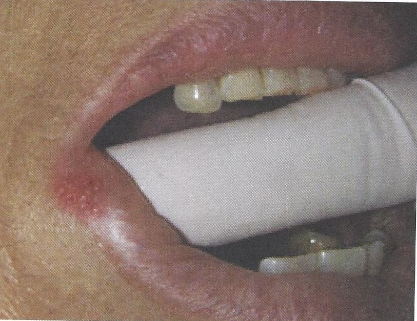

แผลติดเชื้อไวรัส

เริ่มต้นจากมีอาการเจ็บแปล็บ ๆ และมีตุ่มน้ำใสก่อน แล้วแตกออกเป็นแผลขนาดเล็กหลาย ๆ แผลรวมกันเป็นกลุ่ม พบบริเวณริมฝีปากด้านนอก เพดานแข็ง เหงือกยึด รอยโรคมักหายได้เองภายใน 2-3 สัปดาห์ การใช้ครีม acyclovir 5% ทา ช่วยให้แผลหายเร็วขึ้น